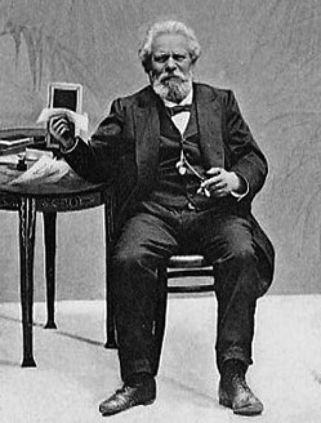

Джозуэ Кардуччи
1. Для тебя, творенье
Высшего искусства,
И души, и плоти,
И ума, и чувства, —
2. Хоть вино искрилось
В хрустале бокала,
Как души крупица
Во зрачках сияла;
3. Хоть Земля и Солнце
В странствиях по кругу,
Улыбаясь, пели
О любви друг к другу,
4. Хоть дрожали руны,
Тайны упокоя, —
По горам, по долам
Жизнь текла рекою.
5. Песнь моя — во славу
Храбрых да великих,
Чтоб ты правил балом,
Сатана-владыка!
6. Брось-ка, поп, кадило,
Приглуши молитвы:
Сатана с тобою
Не оставит битвы!
7. Глянь: огнём и ржою
Меч священный червлен
В пальцах Михаила,
И архангел верный
8. Устремился к Бездне,
Обескрылен, скован
Хлёсткой плетью молний
В дланях Иеговы.
9. Бледным метеором,
Обречённым смерти,
Ангелы низверглись
С ясно-синей тверди.
10. Одинокий пленник
Средь земель бессонных,
Господин явлений,
Повелитель формы,
11. Сатана таится.
Мощь трепещет с болью
Пламенем пожаров
В чёрных глаз угольях,
12. Иль во взоре томном,
Непокорном, царском,
Иль в блестящем, влажном,
Плутовском, бунтарском.
13. Он сияет яркой
Кровью винограда,
Что стремится в тело
И дарует радость,
14. Мимолётность мига
Жизнью наполняет,
Держит скорбь в темнице
И любовь вселяет.
15. Сатана, вольётся
Дух твой в эти строки,
Если сердце гордо
Усомнится в боге —
16. В том царе всесущем,
В том царе жестоком, —
И пронзит рассудок
Дерзновенным током.
17. Для тебя, Астарта,
Ариман, Адонис —
И холсты, и мрамор,
И перо в ладони
18. Там, где безмятежность
Ионии пенной
Славила Венера
Анадиомена.
19. Для тебя в Ливане
Расцветал терновник
И святой Киприды
Воскресал любовник;
20. Для тебя и песни,
И лихие пляски,
Для тебя и девы,
Чьи безгрешны ласки,
21. И душистый ветер
В пальмах Идумеи,
Где Киприды пена —
Всех снегов белее.
22. Что же делать, если
Варвар назарейский
Яростью Агапе
Ритуал злодейский
23. Сотворил, лампадой
Возжигая храмы,
Знаки Арголиды
Разметав по травам?
24. Не забудь, о беглый,
Тех, кто в час немирный
Дал тебе обитель
На своей кумирне!
25. А затем, наполнив
Чашу страсти женской,
Бог-любовник пылкий,
Мудростью вселенской
26. Вдохновлял ты ведьму,
Бледную, нагую,
Утоляя к миру
Тягу колдовскую.
27. Вот колдун и скептик,
Вот алхимик мудрый:
Их очей сияньем
Ты наполнишь утро,
28. Явишь звёзд сиянье,
Неба озаритель,
Позади оставив
Сонную обитель.
29. Вот монах унылый
В Фиваиде ноет,
От всего укрывшись,
Что сквозит тобою.
30. О душа, тропинка
Здесь твоя ветвится.
В Дьяволе — блаженство:
Дар твой — Элоиза!
31. Ни к чему вериги,
Вретища и стоны:
Строки и шептанья
Флакка и Марона —
32. Средь псалмов Давида,
Панихидных песен;
И играет лира
Средь Дельфийских весей.
33. Светлое — страшнее
Чёрных орд без меры,
Волей Ликориды,
Волею Глицеры.
34. Но иных видений
О годах манящих
Захлестнули тени
Взор его неспящий.
35. И страницы Тита
Распалят трибунов,
Консулов горячих,
Толп народных, буйных,
36. Пробуждая страсти;
Итальянцев волю
Не вернёшь, отшельник,
В древний Капитолий.
37. Вас же, кто неистов,
Пламень не укусит:
Рок вплетётся в слово
Виклифа и Гуса.
38. Зов ваш неусыпный
Целый мир объемлет:
Новому рассвету
Наступило время!
39. И уже трепещут
Митры и тиары:
В монастырских кельях —
Мятежа пожары.
40. В проповедях пылких
Льёт елеем голос,
Завернувшись в рясу,
Брат Савонарола.
41. Как свою сутану
Скинул Мартин Лютер,
Разум человечий
Сбрасывает путы.
42. Молнией сверкает
Разум, торжествуя;
Восстаёт мирское;
Сатана ликует.
43. Дивным и ужасным
Грозным великаном
По земле гуляет,
Рыщет в океане;
44. Пламенный, чадящий,
Как вулкана горло,
Покоряет долы,
Пожирает горы;
45. Пролетит над бездной,
Мрачный и неслышный,
В потаённых гротах
Отдохнёт недвижно,
46. И, неукротимый,
С берега на берег
Вихрем пронесётся
Он, свой край измерив.
47. Вихрем разнесутся
Голоса и крики:
Вот идёт он, люди,
Сатана великий!
48. С места и до места
Он летит, как птица,
На неудержимой
Жгучей колеснице.
49. Славься же, о Дьявол,
О стезя восстанья,
О отмщенье мысли,
Разума и знанья!
50. Ты вкушаешь запах
Ладана и слова, —
И поповский сброшен
С неба Иегова!

Стихотворение «Inno a Satana» Jozue Carducci (1835–1907) написал в 1865-м году под псевдонимом Enotrio Romano.
Джозуэ Кардуччи — пожалуй, самый известный поэт XIX века в Италии. Профессор итальянской литературы в Болонском университете, в 1890 г. стал сенатором.
В 1906 году получил Нобелевскую премию по литературе «не только за глубокие знания и критический ум, но прежде всего за творческую энергию, свежесть стиля и лирическую силу, столь характерную для его поэтических шедевров».
Пер. Fr. Nyarlathotep Otis, 2010
Впервые опубликовано: «Апокриф» №30 (сентябрь 2010)